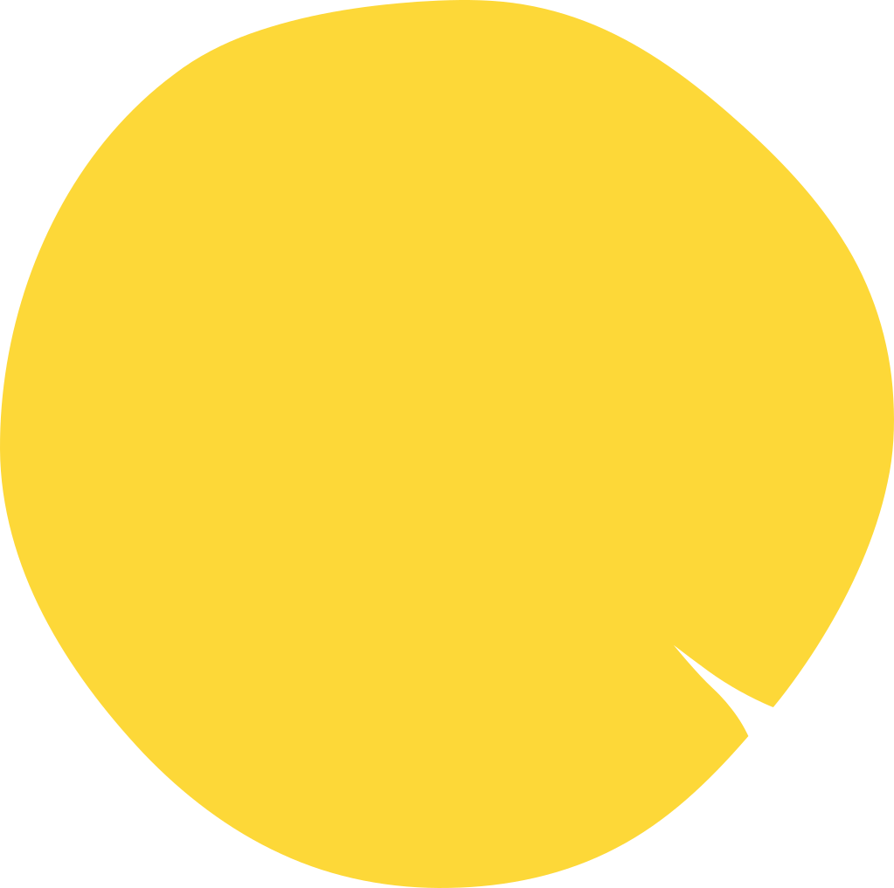
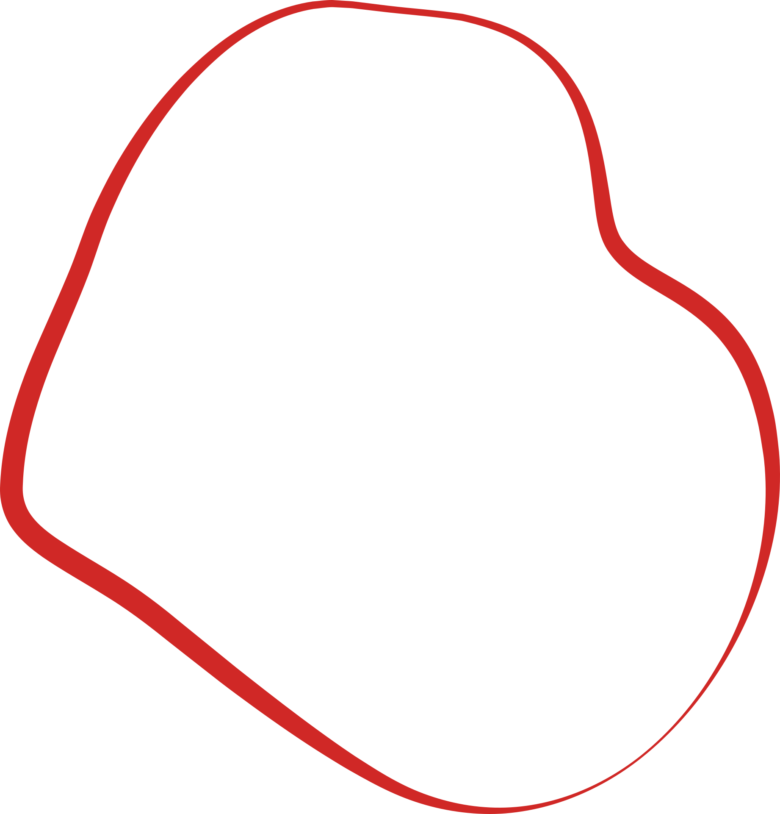
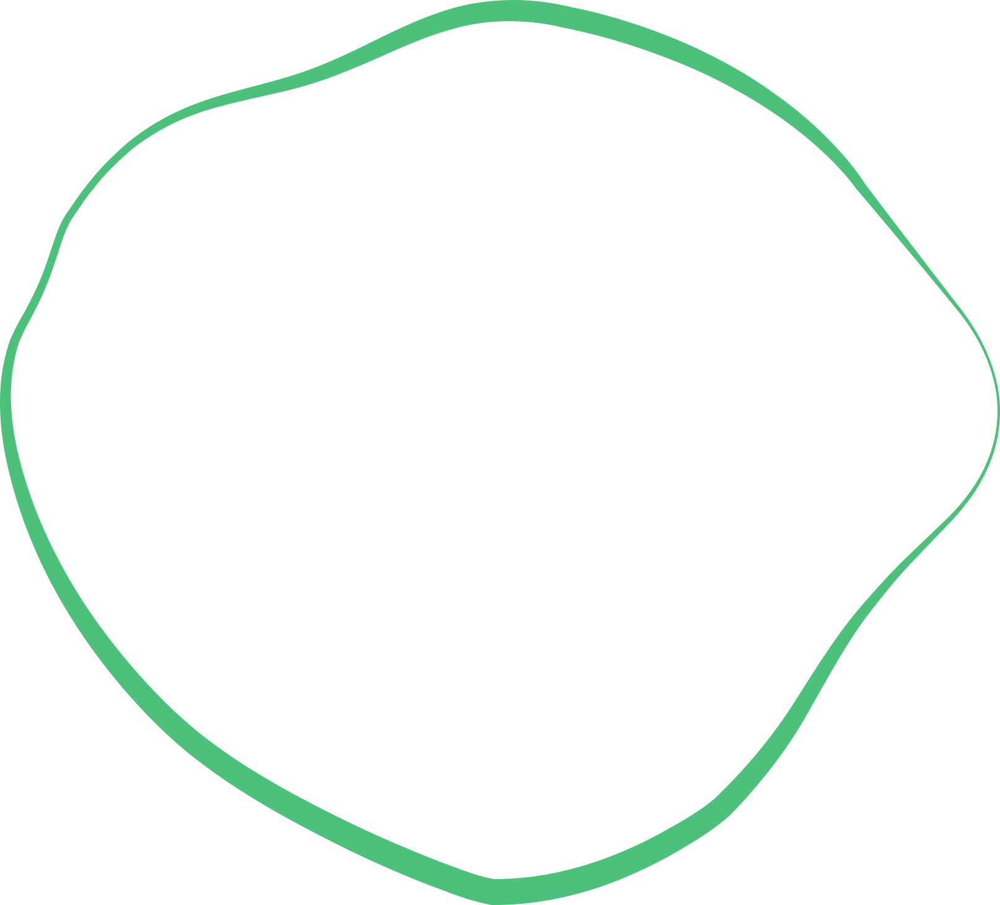
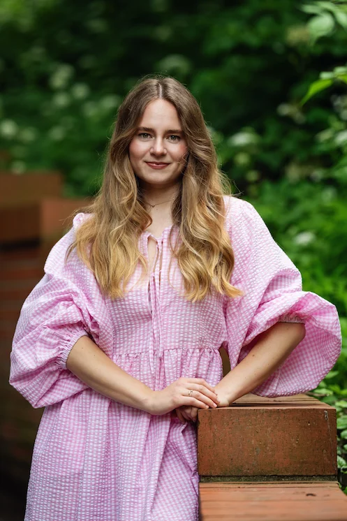
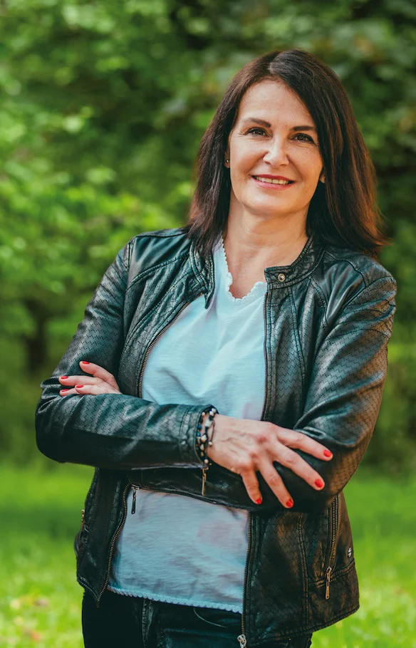
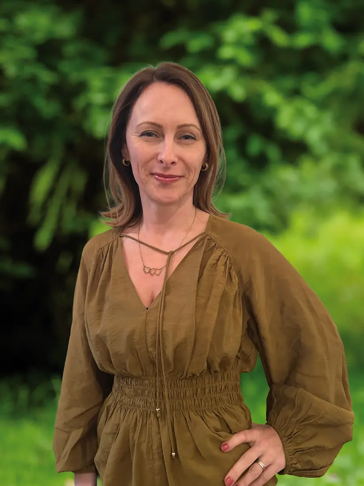
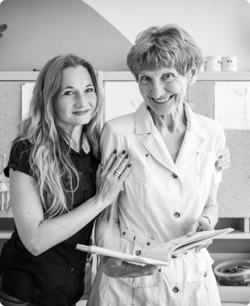

Letokruh vznikl proto, aby dal lidem ve zralém věku možnost žít naplněný život. Možnost předávat zkušenosti, čas a energii druhým, zažívat pocit užitečnosti a respektu, získávat nové přátele. Možnost být sami sebou.



Posláním Letokruhu je smysluplně zapojit seniory do dobrovolnických a dalších aktivit v jejich okolí. Podporovat jejich sebevědomí a chuť do života.
V Praze máme dvě pobočky, na obou najdete pestrou nabídku kurzů, dílen a programů a můžete se zde setkat s koordinátorkami dobrovolníků. Navštěvovat můžete libovolně obě místa podle vašeho výběru aktivit.



Více z našeho aktuálního dění naleznete na našich sociálních sítích Facebooku, Instagramu, YouTube a TikToku
V Letokruhu si zakládáme na osobním přístupu ke každému dobrovolníkovi. Ctíme jeho jedinečnost, podporujeme jeho odlišnost. Vážíme si jeho pozitivních vlastností. Je pro nás zásadní tvořit vztah založený na důvěře. Snažíme se, aby se u nás dobrovolníci cítili bezpečně a měli příležitost seberozvoje.

Senioři pro mne byli vždy velkým osobním tématem, které mne dovedlo až k založení organizace Letokruh. S obrovskou pokorou ukazuji seniorům, že i přes svůj věk mají společnosti stále co nabídnout. Mým dlouhodobým cílem je, aby si i společnost uvědomila, že stáří automaticky neznamená jen křeslo a papuče, ale že stáří dokáže rozdávat radost, zkušenost a nadšení a že je hodno úcty a respektu v kterékoliv jeho fázi.
Kateřina Karbanová, ředitelka a zakladatelka Letokruhu, z.ú.
Letokruh byl založen 21.11.2018